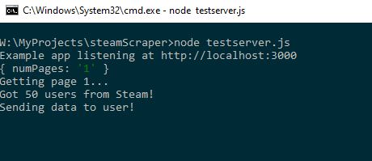

AUSSP
I am a member of the Auburn University Small Satellite Program, which is a space research program where students design, build, test, and operate CubeSats. I work with the ADACS team, or attitude determination and control systems. We build systems such as reaction control wheels, magnetorquers, sun sensors, and other systems to control the attitude of the cube satellite.


Spotify Web App
My Spotify Web App allows you to view your most played songs. To do this, the app requires you to authenticate through Spotify. After authentication is complete, you can view your most played songs from the last four weeks to the last several years. You can also select the number of songs to show, ranging from 10 to 50. All of this information is gathered through Spotify's API. The App itself is built with React.js, Javascript, and HTML/CSS.


CSGO Stat Scraper
My CSGO stat scraper allows you to upload an html file (obtained from steam) and scrape the file for important Counter-Strike: Global Offensive stats.


Steam Scraper
My Steam Scraper scrapes a popular game (Rust) server's website for recently banned players along with their Steam IDs. Using Steam's APIs, a GET request is sent with these players' IDs to get the information seen in the table. The back end server is made with Node.js, using Express, Request, and Axios. The front end is made with HTML/CSS and Javascript (jQuery, Bootstrap).


Robot Operating System (ROS)
ROS is an open source framework for writing robot software that includes tools, libraries,
and conventions that simplify creating a robot.
During the summer of 2020, I decided to
learn ROS by creating a few projects. Through the process, I thoroughly learned the
fundamentals of ROS as well as Linux (Ubuntu).
I also learned how to use Gazebo, the simulation environment mainly used by ROS.
ROS Projects
These two projects were created using ROS.
First, I created an autonomous differential drive robot. The robot has inertia, joints, and
a
lidar laser sensor.
A map of the world was created using a technique called Gmapping, which uses laser range
data to make a map.
I added a global and local planner to my robot, which plan paths to travel to the provided
goal.
Another package called AMCL was implemented to account for the drift of the robot due to
minor inaccuracies in sensor data like wheel encoders.
Secondly, I created a wall-following robot that follows the curve of a wall or track. I made
a Node that publishes a command velocity to
the robot based on lidar data. The actual code uses two PID controllers to compute the
required velocities to follow the wall.